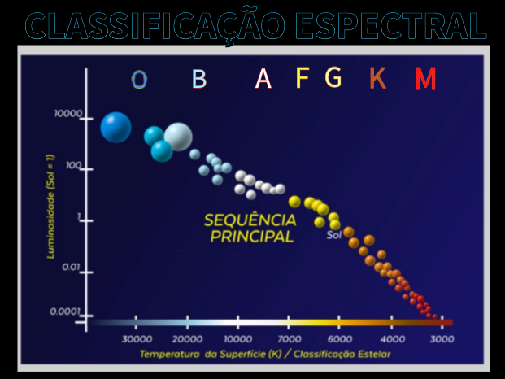
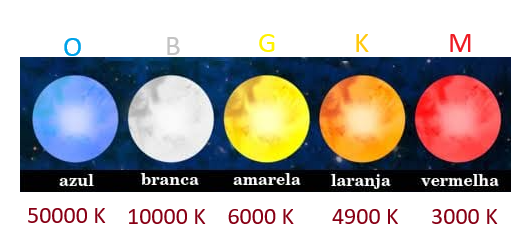

TIPOS DE ESTRELAS E SUAS POSIÇÕES NO DIAGRAMA
O Diagrama Hertzsprung-Russell (HR) é uma ferramenta crucial para a classificação das estrelas, permitindo a visualização de diferentes tipos de estrelas e suas posições relativas no gráfico. Na sequência principal, que se estende diagonalmente do canto superior esquerdo ao canto inferior direito do diagrama, encontram-se as estrelas que estão no estágio principal de suas vidas, fundindo hidrogênio em hélio em seus núcleos.
Essas estrelas variam em tamanho, massa e temperatura, com as estrelas mais massivas e quentes localizadas no topo da sequência principal, enquanto as estrelas menos massivas e mais frias estão na parte inferior (Hertzsprung, 2020).
Como explicado por White e Garcia (2023, p.113):
O Diagrama Hertzsprung-Russell (HR) é uma ferramenta essencial para a classificação e análise dos diferentes tipos de estrelas com base em suas propriedades luminosas e térmicas. As estrelas são distribuídas no diagrama em várias regiões distintas que refletem suas fases evolutivas. As estrelas da sequência principal, localizadas na faixa diagonal que vai do canto superior esquerdo ao canto inferior direito, representam a fase principal da vida estelar, onde a fusão de hidrogênio em hélio ocorre no núcleo. Estas estrelas variam amplamente em luminosidade e temperatura, desde as estrelas quentes e luminosas na parte superior esquerda, como as estrelas O e B, até as estrelas mais frias e menos luminosas, como as estrelas M, na parte inferior direita. A região acima da sequência principal é ocupada pelas gigantes e supergigantes, que são estrelas em estágios avançados de evolução, caracterizadas por uma luminosidade significativamente maior e uma temperatura relativamente baixa.
Essas estrelas incluem exemplos como as gigantes vermelhas e as supergigantes azuis. Abaixo da sequência principal, encontram-se as anãs brancas, que são remanescentes estelares com alta temperatura e baixa luminosidade, representando uma fase final na vida de estrelas de baixa a média massa. A disposição desses tipos de estrelas no Diagrama HR fornece informações valiosas sobre suas características físicas e estágios evolutivos" (White & Garcia, 2023, p. 113).

As estrelas de tipo O e B, que são as mais quentes e massivas, ocupam a parte superior esquerda da sequência principal. Essas estrelas têm temperaturas que variam de 10.000 K a 50.000 K e são extremamente luminosas, muitas vezes milhares de vezes mais brilhantes que o Sol. Devido à sua alta massa e intensa fusão nuclear, essas estrelas têm vidas relativamente curtas, de apenas alguns milhões de anos, antes de evoluírem para supergigantes ou explodirem como supernovas (Russell, 2019).
Descendo na sequência principal, encontramos as estrelas de tipo A e F, que são um pouco menos quentes, com temperaturas que variam de 7.500 K a 10.000 K. Essas estrelas ainda são bastante luminosas, mas não tanto quanto as estrelas de tipo O e B. As estrelas de tipo A e F são muitas vezes visíveis a olho nu no céu noturno, como Sirius e Vega. Elas têm uma vida útil mais longa do que as estrelas mais quentes e podem evoluir para se tornarem gigantes vermelhas à medida que esgotam o hidrogênio em seus núcleos (Hertzsprung, 2020).
No meio da sequência principal estão as estrelas de tipo G, que incluem o Sol. Essas estrelas têm temperaturas que variam de 5.300 K a 6.000 K e têm uma luminosidade semelhante à do Sol. Estrelas de tipo G são estáveis por bilhões de anos, passando a maior parte de suas vidas na sequência principal antes de se expandirem para gigantes vermelhas e, eventualmente, se transformarem em anãs brancas. A estabilidade dessas estrelas as torna um ponto focal para o estudo da vida estelar e da habitabilidade planetária (Russell, 2019).
As estrelas de tipo K e M, que ocupam a parte inferior direita da sequência principal, são as estrelas mais frias e menos massivas. Elas têm temperaturas que variam de 2.000 K a 5.300 K e são significativamente menos luminosas que o Sol. Estrelas de tipo M, também conhecidas como anãs vermelhas, são as estrelas mais comuns no universo, representando cerca de 70% de todas as estrelas. Devido à sua baixa luminosidade e longa vida útil, essas estrelas são de grande interesse para a pesquisa de exoplanetas e a busca por vida fora da Terra (Hertzsprung, 2020).
